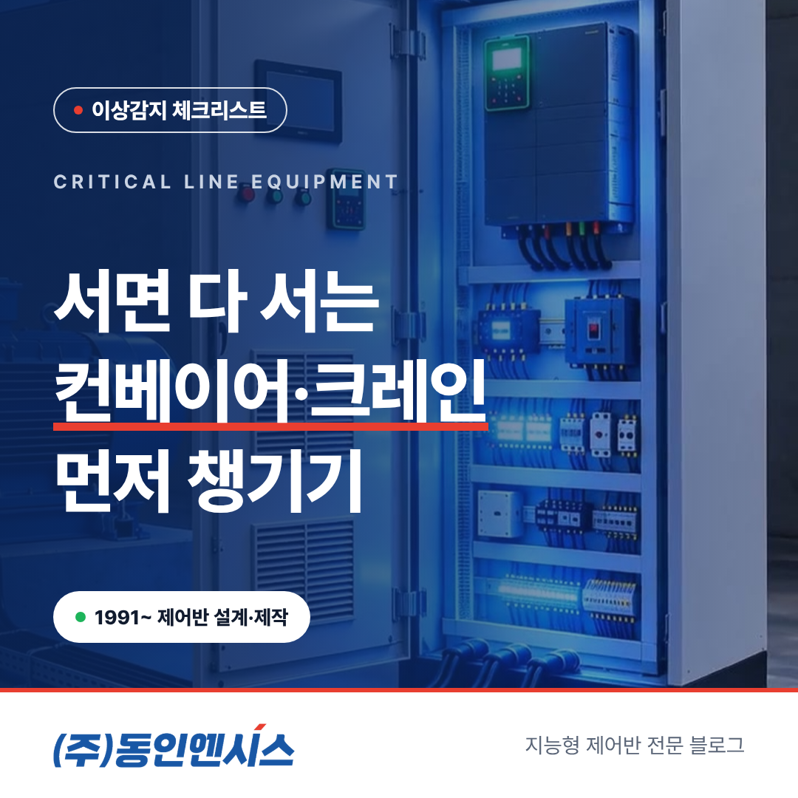
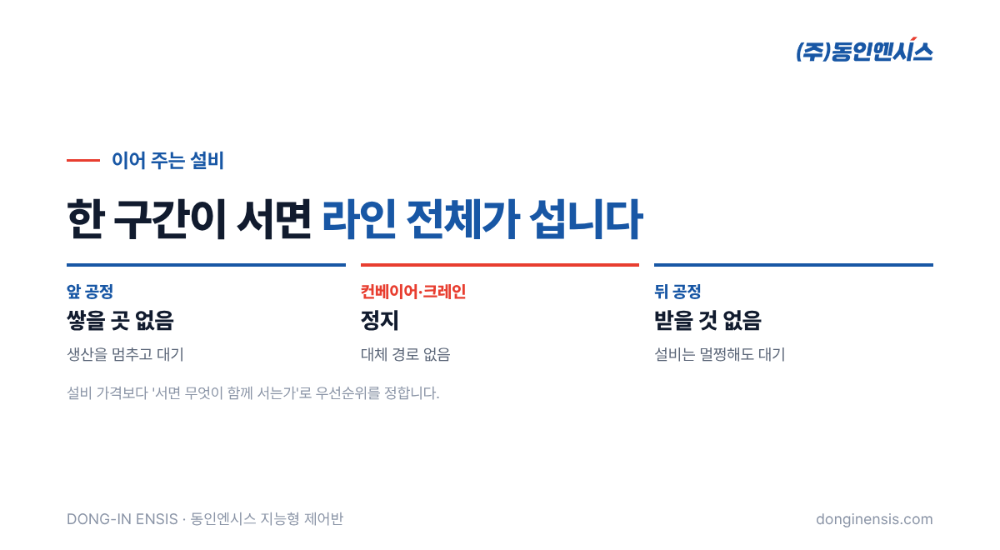
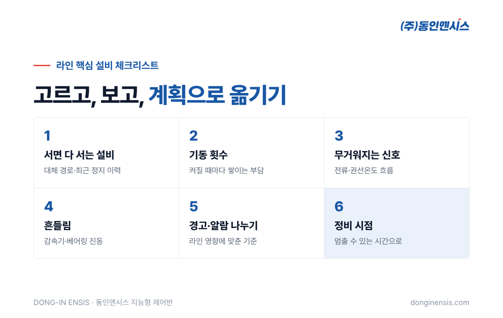

공장 설비 가운데 고장 나면 가장 티가 나는 것은 무엇일까요. 비싼 설비보다 '이어 주는 설비'인 경우가 많습니다. 컨베이어 한 구간이 서면 앞 공정은 물건을 쌓아 둘 곳이 없고, 뒤 공정은 받을 물건이 없습니다. 천장 크레인이 멈추면 무거운 소재를 옮길 방법이 사라집니다. 1991년 부산에서 출발해 공장과 배의 제어반을 설계·제작해 온 동인엔시스가, 라인 전체를 세우는 설비부터 챙기는 컨베이어 모터 관리 체크리스트 여섯 가지를 정리했습니다.
설비 관리 예산과 시간은 늘 부족합니다. 그래서 어느 설비부터 챙길지 정하는 기준이 필요합니다. 가장 현실적인 기준은 설비 가격이 아니라 '이 설비가 서면 무엇이 함께 서는가'입니다.
컨베이어와 크레인은 그 자체로는 단순한 설비처럼 보이지만, 공정과 공정을 잇는 자리에 있습니다. 하나가 서면 그 앞뒤가 모두 멈춥니다. 게다가 대개 여러 대가 직렬로 이어져 있어 어느 한 대만 서도 전체 흐름이 끊깁니다. 라인 정지의 영향이 큰 설비부터 데이터를 남기기 시작하면, 같은 노력으로 가장 큰 손실을 막을 수 있습니다.

아래 여섯 가지는 '어느 설비를 고를까'에서 시작해 '언제 손볼까'로 끝납니다. 이미 데이터를 모으고 있는 현장이라면 빠진 항목이 없는지 점검하는 용도로 쓰셔도 좋습니다.
먼저 라인 배치도를 펴 놓고, 각 설비가 멈췄을 때 영향을 받는 범위를 표시해 봅니다.
이 질문에 많이 걸리는 설비 한두 대가 첫 대상입니다. 처음부터 모든 컨베이어를 챙기려 하기보다, 가장 아픈 곳에서 시작해 넓혀 가는 편이 효과를 확인하기 쉽습니다.
컨베이어와 크레인은 늘 같은 속도로 도는 펌프와 다릅니다. 물건이 올 때마다 움직이고, 쌓이면 멈추고, 크레인은 들고 내릴 때마다 기동과 정지를 반복합니다.
모터에게 가장 힘든 순간이 바로 이 기동입니다. 켜질 때마다 큰 전류가 흐르고 열이 쌓입니다. 그래서 이런 설비는 평균값보다 '하루에 몇 번 켜졌는지', '켜질 때 전류가 어떻게 변하는지'를 함께 보는 것이 중요합니다.
컨베이어 벨트가 늘어나거나, 롤러 베어링이 닳거나, 정렬이 틀어지면 모터는 같은 일을 하는데 힘이 더 듭니다. 이 변화는 대개 전류와 온도에 먼저 나타납니다.
하루치 값만 보면 정상 범위 안이라 지나치기 쉽지만, 몇 주의 흐름을 이어 보면 오르는 선이 보입니다. 이 선을 일찍 발견하면 벨트 장력 조정이나 롤러 교체처럼 비교적 작은 정비로 끝낼 수 있습니다. 같은 문제를 모터가 과열로 멈춘 뒤에 발견하면 모터 수리까지 겹쳐 라인이 서는 시간이 훨씬 길어집니다.
Photorealistic photo of a long industrial belt conveyor line in a Korean manufacturing plant carrying metal parts, a geared electric motor drive unit in the foreground at the conveyor head, a light-grey control cabinet nearby, bright industrial lighting, workers far in the background out of focus, no brand logos, no readable text. 3:2 landscape.
감속기와 베어링의 이상은 진동으로 먼저 드러나는 경우가 많습니다. 숙련자는 소리로 알아채지만, 사람마다 감이 다르고 시끄러운 공장에서는 놓치기 쉽습니다.
동인엔시스가 만드는 지능형 제어반은 컨베이어를 움직이는 일과 그 움직임을 받아 적는 일을 한 번에 맡습니다. 열과 진동, 전기 쪽 값에 운전 상태까지 같은 시각으로 묶어 남기기 때문에, '켜질 때마다 무엇이 달라지는지'를 따로 장비 없이 볼 수 있습니다. 컨베이어와 크레인처럼 움직임이 잦은 설비에서는 이 값들을 운전 상태와 묶어 보는 것이 특히 쓸모 있습니다.
모든 설비에 같은 기준을 걸 필요는 없습니다. 라인을 세우는 설비라면 조금 더 일찍 경고를 받는 편이 낫고, 대체 경로가 있는 설비라면 조금 느슨해도 됩니다.
기준값은 시운전과 안정화 기간에 그 설비의 평소 모습을 보고 정하고, 운영하면서 다시 맞춥니다. 성수기처럼 물동량이 크게 늘어나는 시기에는 기동 횟수와 부하가 함께 오르므로, 그때마다 기준이 현실에 맞는지 확인해 두면 쓸데없는 경고를 줄일 수 있습니다.

이 체크리스트의 최종 목표는 고장을 없애는 것이 아니라, 고장을 계획 안으로 들여오는 것입니다. 동인엔시스가 현장마다 강조하는 것도 이 점입니다. 컨베이어가 생산 중에 갑자기 서면 라인 전체가 기다리지만, 주말이나 교대 사이에 미리 손보면 아무도 기다리지 않습니다.
Photorealistic wide photo of a yellow overhead bridge crane with an electric hoist in a large Korean steel processing factory, steel coils on the floor, high ceiling with skylights, a crane control pendant hanging, no people in focus, no brand logos, no readable text. 3:2 landscape.
제어반을 바꾸고 첫 한 달은 경고보다 '평소'를 익히는 기간입니다. 이 시기에는 세 가지를 확인해 보세요. 하루 중 언제 기동이 몰리는지, 교대 시간이나 점심시간 전후로 부하가 어떻게 바뀌는지, 같은 종류의 컨베이어 구간끼리 전류와 온도가 얼마나 다른지입니다. 이 세 가지가 보이면 경고 기준을 어디에 둘지, 어느 구간을 먼저 정비할지가 자연스럽게 정해집니다.
Q. 컨베이어가 여러 구간인데 전부 해야 하나요? 아닙니다. 대체 경로가 없고 멈추면 라인이 서는 구간 한두 곳부터 시작하는 것을 권합니다. 설비는 그대로 두고 제어반만 바꾸거나 새로 설치하므로, 효과를 본 뒤 구간을 늘리기 쉽습니다.
Q. 크레인에도 적용할 수 있나요? 모터로 움직이는 설비라면 대부분 적용할 수 있습니다. 크레인의 구조와 설치 환경은 현장 분석에서 함께 확인합니다.
Q. 컨베이어 모터 관리에 AI가 필요한가요? 지금 바로 쓰는 것은 기준값에 따른 경고·알람과 24시간 기록입니다. AI로 작은 이상을 잡아내는 기능은 아직 실증 단계에서 다듬고 있어, 우선은 기록과 기준값으로 시작하시면 됩니다.
컨베이어 모터 관리의 핵심은 라인을 세우는 설비를 먼저 고르고, 그 설비가 힘들어지는 신호를 일찍 보는 것입니다. 기동 횟수, 전류와 온도의 흐름, 진동을 남겨 두면 갑작스러운 정지를 계획된 정비로 바꿀 수 있습니다. 우리 라인에서 '서면 다 서는' 설비 하나부터 떠올려 보세요.
문의 051-862-3668 · dongin@donginmne.com
아래 질문 중 하나에 실제 경험으로 답해 본문 적당한 곳에 넣어 주세요. 사람이 직접 쓴 문장이 들어가면 네이버에서 저품질 위험이 줄고 노출에 도움이 됩니다.